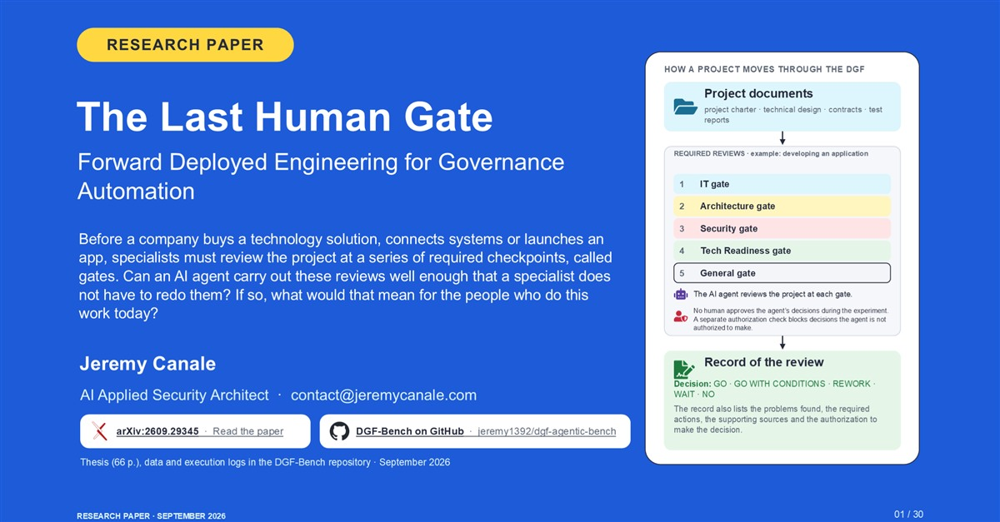

Agentic security · Research paper
Can AI take over the reviews that decide a project’s future?
I ran an AI agent through 300 fictional projects to see whether it can carry out the reviews that decide a project’s future, all the way to the decision. It can, under conditions. The harder question is how much human work remains.
Research · 29 min read · arXiv + deck of 30 slides